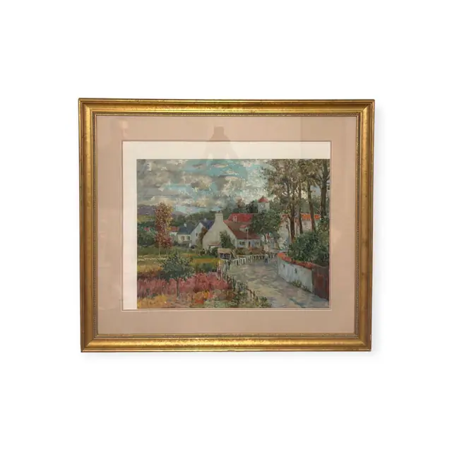
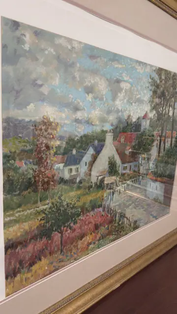
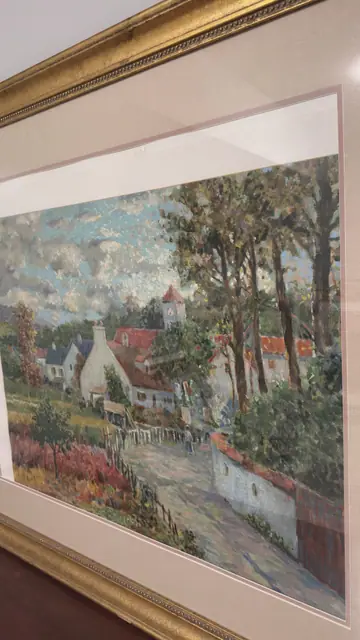
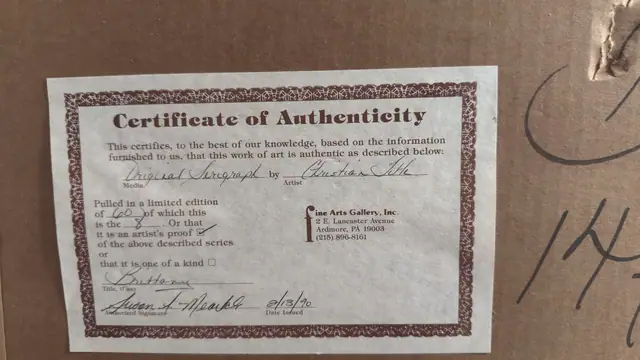

Paintings & Prints
Brittany Village Lane, Signed Serigraph Artist's Proof, Christian Title, Signed in the Plate, Framed
Christian Title · late 20th century; certificate dated 8/13/90
Price Upon Request




About the Item
Christian Title. An impressionist village view built from short, loaded strokes: a rutted lane sweeps in from the lower right past a low whitewashed wall, leading the eye to a cluster of stone cottages with terracotta roofs and a slender clock tower. A stand of tall poplars rises at the right against a bank of blue-grey and cream cloud, while at the left a field of rust and crimson foliage burns beside a picket fence. The palette is cool blue and green-grey against warm russet and terracotta, and a single small figure walks the lane. Presented with a wide blush-linen double mat inside a broad gold moulding under glass. Medium: serigraph on paper. Edition: limited edition of 60; the numbers 60 and 8 are struck through and the 'artist's proof' box is ticked, so this is designated an artist's proof. Accompanied by a certificate: Certifies an original serigraph by Christian Title titled 'Brittany', designated an artist's proof, issued 8/13/90. Inscribed on the reverse or mount: Certificate of Authenticity; This certifies, to the best of our knowledge, based on the information furnished to us, that this work of art is authentic as described below:; Media: Original Serigraph; Artist: Christian Title. Condition: No damage visible through the glass. Heavy overhead glare on the glazing in the angled shots. The backing paper is scuffed and the certificate is taped to it with a lifting corner.
Details
- Creator:
- Christian Title
- Creation Year:
- late 20th century; certificate dated 8/13/90
- Dimensions:
- Height: 37.25 in (94.61 cm)
Width: 43.1 in (109.47 cm)
outside of frame - Medium:
- serigraph on paper
- Edition:
- limited edition of 60; the numbers 60 and 8 are struck through and the 'artist's proof' box is ticked, so this is designated an artist's proof
- Period:
- 20Th
- Condition:
- Offered in the condition shown in the photographs.
- Reference Number:
- VO-172
- Documentation:
- Certifies an original serigraph by Christian Title titled 'Brittany', designated an artist's proof, issued 8/13/90.
- Gallery Location:
- Fine Arts Gallery, Inc.